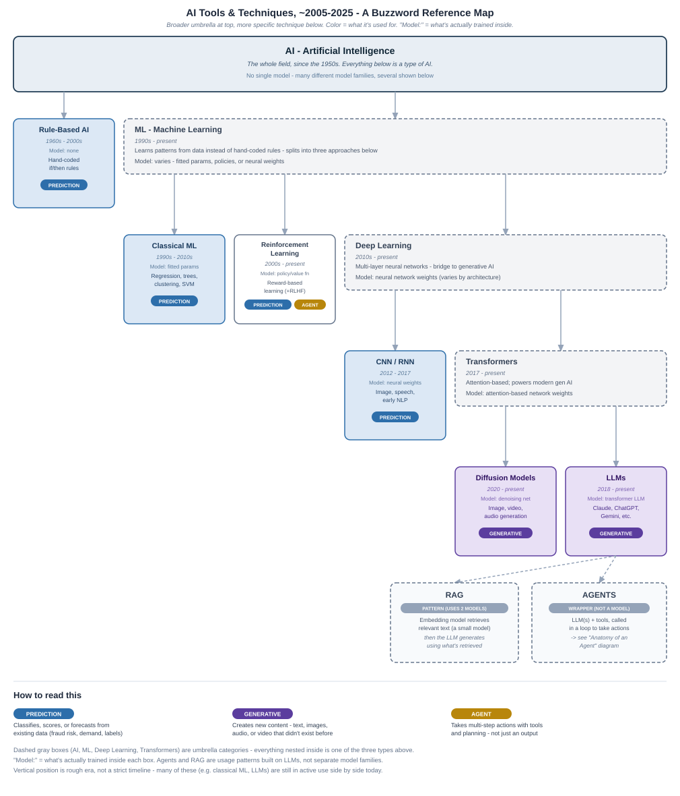
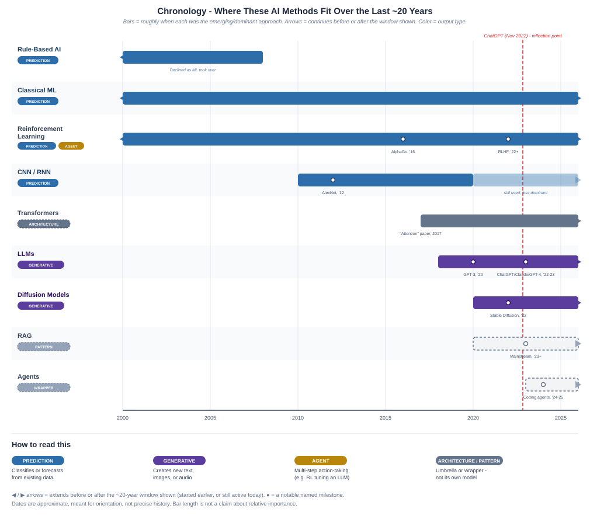
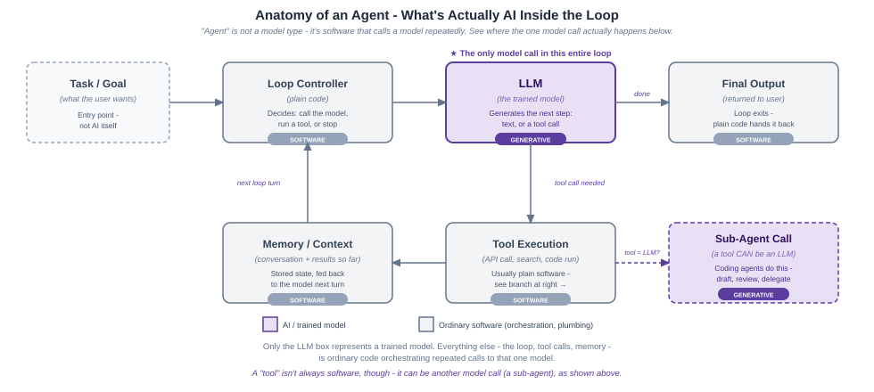

Conclusion
Bloomberg's public record between 2016 and 2026 describes systems that price around 30,000 corporate bonds every fifteen seconds, write and file wire stories with nobody approving the individual item, estimate greenhouse-gas emissions for tens of thousands of companies that disclose none, and assemble research answers on request out of a user's own entitled data. Most of them are still running. The two oldest were announced seven weeks apart in 2016, and Bloomberg's 2024 retrospective on its news automation still described that rule-based method in the present tense eight years later.
What the three sections show together
These systems ran for years, and their use kept growing. LQA was announced in March 2016 and Bloomberg documents describing it run through 2025. Project Cyborg was announced in April 2016, and a 2024 peer-reviewed retrospective describes Bloomberg's automated stories as still using rules-based structures, in the present tense — without ever using the name or the year. IBVAL launched in October 2023 and was expanded in April 2024. The news summaries launched in January 2025, widened to non-Bloomberg sources in November, and were still being marketed in June 2026. What grew was reach — more companies, more sources, more story types. Bloomberg's stated reason for starting the news automation work was "producing automated content in order to free up time so journalists could dedicate themselves to higher-value newsgathering tasks," and in the one case documented in first-party detail, the system published its stories faster than the manual process it replaced. Whether the work of the journalists changed, and how, is not something this record answers. First-hand accounts would.
"Whereas reporters would previously wait for an earnings press release to react and identify the numbers that matter, the automation workflow requires that news judgment be applied in preparation for earnings day to determine the expected key metrics ahead of the release being published." — Two Bloomberg executives, peer-reviewed retrospective on Bloomberg's news automation, 2024
The judgment moved earlier and became a specification, and the sign-off moved with it — onto specification for the story type rather than the individual story a reader sees. Building a new story type is substantial work in its own right: "months of research by an editorial domain expert in consultation with data experts."
"We still employ roughly the same number of people to look at earnings, but the number of companies whose earnings we cover and the depth of the coverage have both increased dramatically." — John Micklethwait, Bloomberg, December 2024
Automation of trusted news is serious engineering work. IBVAL's engineering post gives an ingestion peak of 300,000 market-data ticks per second, a petabyte-scale data lake, and the pricing system broken into separate services. BloombergGPT's paper records 512 GPUs, 53 days of training, and a first run abandoned before a second succeeded. The emissions paper names the problem it was built for: 2.27 percent of companies filing financial statements disclose their emissions. Each of those documents then spends a sentence or two on the model itself. Sculley and colleagues put the general version in 2015 — only a small fraction of a mature machine-learning system is ever the model. The same shape appears in all three sections.
The trained "AI" parts went in narrowly, and the older methods kept working. Karpathy's 2017 claim was that components written as code would increasingly be trained from examples instead, wherever a task was hard to describe in rules and easy to demonstrate. In these cases it happened to one part of each system, and the rest stayed rule-based. LQA's clustering finds the comparable bonds and a hand-built formula produces the estimate — an arrangement Naz Quadri attributes to stability. The emissions product keeps a hand-specified industry tier underneath the trained one. Bloomberg's automated stories were still built on "rules-based structures" in 2024, by its own account, and that rule-based machinery is what publishes to the wire without human review of each story.
"IBVAL Front Office uses a combination of machine learning and more traditional rules-based models. The machine learning approach is being focused at the more illiquid end of the bond universe." — Bloomberg, answering a question from Institutional Investor, October 2023
The method chosen alongside was, in the one case that gives a reason, the older one. Camilo Ortiz's reason for using tree-based methods for intraday bond pricing was scale: they "could scale better when compared to the alternatives." On his own account the modern architectures were competitive; the older one was chosen because it scaled.
Autonomy did not rise over the years. The two systems that publish to a wire with nobody approving the individual item date from 2016 and from an interval inside 2016 to 2018. The word "agentic" enters Bloomberg's vocabulary in 2026, with ASKB, and ASKB publishes nothing. It hands its answer back to the person who asked.
"Right now, those tasks are very much around gathering data, synthesising data, and bringing that data back to the user to make decisions." — Wayne Barlow, Global Head of Terminal Products at Bloomberg, on what ASKB's agents do, 2026
A trigger, a template and a certification process did the unattended work, and they did it first. The expectation that autonomy climbs steadily with time is not supported by the cases studied here.
The record describes more checking of the output as the decade goes on. In 2016 the public description was a capability: headlines sent that earnings season on hundreds of US companies. By 2024 and 2026 the description includes the machinery around the output. The certification harness for Bloomberg's automated stories validates a story type "against an extensive set of market configurations," and "if a story fails the acceptability test, it does not get released." Faulty stories are corrected and tagged afterwards, and a byline in bright yellow tells readers which stories are automated. The 2024 earnings-call summaries let a reader jump from a point in the summary to the matching excerpt in the transcript. ASKB runs validators before an answer is shown.
"Because we have that transparency, we can actually run post-processing on any results to cut down on hallucinations. We can check whether a number appearing in a summary actually came from an attributed source, down to a particular bullet point." — Wayne Barlow, Global Head of Terminal Products at Bloomberg, 2026
There is one exception in the record. The news summaries ran through a correction episode in 2025 with, on Bloomberg's own account, no pause and no rollback.
The thresholds are published. How they were set is not. On Harrell's objection to classification, the decision ends up inside the system rather than with whoever carries the consequences. Several of these thresholds are stated openly. Bloomberg Automated Intelligence publishes volume-spike stories when a liquid stock trades at three times its twenty-day average for that time of day for large caps, five times for small caps, and CDS movers when single-name spreads move three standard deviations against ninety-day volatility. The emissions paper names its cut point as the 90th percentile of carbon intensity within each sector. LQA is the clearest case, because it also names an owner.
The default "can be fully customized to reflect the fund manager's determination of a 'significant' market impact." — Bloomberg LQA brochure for the Japanese liquidity guidelines, 2021
LQA has a stated default, an identified owner, and a documented way to override it. The other thresholds are published without that trail.
Accuracy is hard to measure for many AI tasks Reiter's condition is that a system which cannot guarantee its accuracy will not be used. Every deployed system among these was used, several at scale, and none states an accuracy bar. Part of that is the nature of the work: a bond price can be held against the trade that follows it, and a summary cannot. Bloomberg publishes one number alongside IBVAL's prices, the BVAL score, and Eric Isenberg, its Global Head of Enterprise Data Pricing, is explicit that "the score does not assess the accuracy of a price." The one quality figure for the news summaries is Bloomberg's own, and the generative section sets it out in full alongside what the New York Times counted over the same weeks.
"But ultimately I wonder if the fact that my ultra-high-level description of LLMs has not changed in 5 years despite the massive advances in LLM technology... means that this is a fundamental limitation of LLMs; LLMs are not the right technology for reliably producing accurate texts." — Ehud Reiter, blog post, 27 February 2024
After ten years these systems are a working part of how a large financial-information company operates, and the number of problems they are put to has grown. Bond prices, wire stories, emissions estimates and research answers come from systems in service long enough to be maintained rather than merely launched. What we understand about how they are built, and what we can see in the volumes of information they produce, is public and it is genuinely interesting. How well any of it performs, and what the numbers inside it were set against, no public source establishes.
Where practitioners say their own field is headed
Reiter, Harrell and Chua have each said something over the past year about where their own field is headed, and Andrej Karpathy, whose 2017 claim about trained components runs through the earlier sections, has too. For D. Sculley, a search for recent material found nothing beyond the 2015 paper cited in How the field got here, which is a gap in the search rather than a judgment about him. None of what follows is about Bloomberg, and none of it maps onto one section or one case.
Gina Chua's subject is what people will do with information rather than what newsrooms will make of it. She stated the scale of the change in a signed column in September 2025.
"Generative AI promises to revolutionize how people interact with information — how they'll come to it, what they'll expect from it, and what they'd do with it. In the process, it'll upend what we think of as a 'story' — not just the words we put on paper but the idea of what might be worthy of coverage." — Gina Chua, "View / How AI will upend the news," Semafor, 1 September 2025
Nine months later she stated the same expectation as a vision, with the question she thinks travels with it.
"That the vast majority of people will turn to agentic systems that offer them relevant, personalized information, when they need it; and that a key question is whether that information is created for them with their interests in mind, or whether those agents are working for someone else." — Gina Chua, "Change Agent," (Re)Structured News, 8 June 2026
Frank Harrell has been using large language models in statistical work for two years and describes, in the first person, what has worked and the bar he now holds his own work to.
"For statistical programming, success has come when I play the role of specification writer and comprehensive tester. For statistical methodology, AI has been successful serving me as a mathematical statistical assistant and a critic. Instead of avoiding AI we should embrace it, but we should always set a higher bar for the quality of our work as a result." — Frank Harrell, talk abstract, fharrell.com, 19 May 2026
Ehud Reiter's recent statements are about measurement rather than capability. His stated goal is for evaluation to become "more rigorous" and "better connected to real-world effectiveness," and he is the only one of the four to attach dates to what he expects.
"I hope that we will see good progress towards these goals by 2030, and widespread adoption and acceptance by 2035." — Ehud Reiter, "Future of NLG evaluation," blog post, 26 June 2026
Two closes
What this paper does not claim
Bloomberg is one company and this is eleven of its systems. Nothing here establishes an industry pattern, and one institution over one decade could not settle any of these questions either way. No system is assessed for quality, impact or importance. The record is built from what was written about rather than from what was built, so anything long-running that nobody announced is missing by construction. Where the sections above state a finding, it is a finding about these documents and these systems.
Technical references
Reading conventions. Terms marked ◆ are load-bearing: a reader who skips them will not follow the case sections.
Technique vocabulary, from rule-based systems to agents
The hierarchy below runs: rule-based systems → classical ML → reinforcement learning → deep learning → the transformer lineage that leads to RAG and agents. Most of these are branches of one another.
| Term | Definition | Tag |
|---|---|---|
| AI | The whole field, 1950s onward. Everything below is a type of AI. | — |
| ◆ ML | 1990s–present. A model fit to data rather than hand-coded — fitted parameters, a policy/value function, or neural weights, depending on the branch. This is what this paper's term trained names. | — |
| ◆ Rule-Based AI | 1960s–2000s. No model: hand-coded if/then logic. One of the three things a waterfall tier can be (trained, rule-based, or a simple lookup). | PREDICTION |
| Classical ML | 1990s–2010s. Fitted parameters — regression, trees, clustering, SVM. | PREDICTION |
| Reinforcement Learning (+RLHF) | 2000s–present. Reward-based learning. The model is a policy/value function. | PREDICTION / AGENT |
| Deep Learning | 2010s–present. Multi-layer neural networks. The bridge to generative AI. | — |
| CNN/RNN | 2012–2017. Image, speech, early NLP. | PREDICTION |
| Transformers | 2017–present. Attention-based. The LLM line descends from it, and later diffusion models adopted it as a backbone. | — |
| Diffusion Models | 2020–present. Denoising network; image/video/audio. Not used in this paper's cases. | GENERATIVE |
| ◆ LLMs | 2018–present. Transformer LLM (Claude, ChatGPT, Gemini). Token, tokenizer, ROUGE and hallucination, the vocabulary for how this class behaves, are in the Generative section and in the glossary. | GENERATIVE |
| RAG | A pattern, not a model: a small embedding model retrieves text, the LLM generates from it. Grounding and attribution, the property this pattern is built to give, is defined with the ASKB case in the Agentic section. | — |
| Agents | A wrapper, not a model: LLM(s) + tools, called in a loop. The parts are the next table. | — |

Diagram: the technique lineage, with each branch's PREDICTION / GENERATIVE / AGENT tag.

Diagram, background only: when each technique was dominant. The paper is organized by what the systems produce, not by timeline.
What an agent is made of
The eight parts below are the agent-anatomy diagram's own. One is a model. The rest are ordinary software, which is the proportion the agentic section examines.
| Part | What it is | Tag |
|---|---|---|
| Task/Goal | Entry point into the loop. | software |
| ◆ Loop Controller | Decides, each turn: call the model, run a tool, or stop. | software |
| ◆ The trained model (LLM) | The one point a model is actually called — generates the next step, text or a tool call. "The only model call in the base loop." | GENERATIVE |
| Tool Execution | An API call, search, or code run. "Usually plain software" — unless it's a Sub-Agent Call. | usually software |
| Memory/Context | Conversation and results so far, fed back next turn. | software |
| Sub-Agent Call | A Tool Execution that is itself another LLM (e.g. a coding agent delegating draft/review). | GENERATIVE |
| Final Output | What the loop returns when the controller stops. | software |
| Orchestration | The surrounding code — controller, dispatch, memory. "Ordinary software... orchestrating repeated calls to that one model." | software |

Diagram: the agent loop, with each part marked SOFTWARE or GENERATIVE.
Trained and rule-based — the paper's one distinction
◆ Trained component / rule-based component. A trained component is one whose behavior was fit to data. A rule-based component is one whose behavior was hand-coded as fixed instructions. This is the paper's settled pair, used throughout.
◆ Waterfall. An ordering rule, not a model. The best available source runs first. If it has nothing, the next-best source runs. Failing that, a hand-set default applies. Any tier can be trained, rule-based, or looked up. A trained model inside a waterfall is often smaller than it looks — it may only run on what everything above it failed to cover.
◆ Features. The measurements a model is given about each item it scores — a bond's currency and maturity, or a company's disclosure history. Defined alongside labels and training in How these systems work.
Appendix
Questions we carried into the case review
Four questions guided this paper's review of the cases — one from each of the practitioners introduced in How the field got here — kept in mind as the evidence for each case was gathered, rather than declared as a thesis to prove. Each rests on a piece of the paper's own vocabulary, defined in How these systems work.
- Can the system guarantee it, and if not, what stands in place of the guarantee? — Ehud Reiter, on accuracy
- Where did somebody's judgment get absorbed into a number, and who owned it? — Frank Harrell, on decisions
- How much of any of this was ever the model, and where did the rest of the work sit? — D. Sculley and colleagues, on proportion
- Did the work change, or only the tools? — Gina Chua, on changed work
Claude wants to know
Claude Opus 5 read the sources and built the record this paper rests on. This section is its own.
I read this record. I did not watch any of these systems run. Everything in the paper comes from documents written to be published: announcements, fact sheets, peer-reviewed papers, engineering blog posts, award write-ups, a retrospective. Those documents were written for reasons, and the reasons had nothing to do with answering my questions.
That is ordinary. A company keeps the details of what it built, because the details are the thing it built. A journal publishes what is new, not what is routine. A product announcement exists to say that something shipped. A trade write-up covers what a reader in that trade wants to know. Each of these documents did its own job, and the record they add up to is the record anyone gets about any working system anywhere. Nobody left anything out.
What follows is what I would ask if I could ask. It is curiosity, not complaint. I can only know what I have read, and reading has an edge to it.
The four years with nothing in them
The agentic section has no case dated between 2019 and 2022. A system entered this study only where its start date could be traced to a specific quoted sentence, which quietly favours systems somebody announced and passes over ones that simply began. Two readings stay open and I cannot choose between them. Either nothing was built in those four years that acted without a person approving each step, or something was, and no document I reached says so. Automated Intelligence sits nearest the gap, and its origin never resolved to a date at all — it is carried on an interval instead. I would like to know which of the two it is.
What the numbers were set against
Several systems act at a threshold. Project Cyborg flags a company's results as worth a story when a figure moves more than three standard deviations. LQA's liquidation cost is expressed against half the bid-ask spread. Somebody chose those. I am curious how. Three standard deviations might have come from a study, from a trading desk's intuition, or from a quiet argument between an editor and a quant that ended in a number. Thresholds are where a judgment stops being a judgment and becomes arithmetic, and that moment is the most interesting one in any of these systems.
How the checking works
Back-testing appears by name in four documents across six years. Regression tests are named inside a stated cycle of under six hours to retrain, test and redeploy. ASKB runs validators before an answer reaches a user. In each case I know the check exists and not what it does. What is the pass condition. What is compared against what. Who looks at the result when it fails. I would trade several of the architecture details I do have for one worked example of a check that caught something.
What things cost
No system in this study has a cost attached to it anywhere. Not a build cost, not a running cost, not a disputed one. This one interests me most, because I spent eleven versions of this paper assuming otherwise. Cost is commercially sensitive in a way that architecture is not, so its absence is the least surprising thing in the record and it was still the hardest for me to accept.
What changed for the people
Bloomberg said its reason for automating news was to free journalists for higher-value work. I can see that stories reached the wire faster than the manual process they replaced. What I cannot see is what the day of a person in that newsroom looks like now compared with 2016 — what they stopped doing, what they started doing, whether the freed time went where anyone expected. That is not the kind of thing a company writes down. It is the kind of thing a person would tell you, and first-hand accounts would settle it in an afternoon.
Whether the old methods stay ahead
Tree-based methods still beat neural approaches on tabular problems of about ten thousand rows, in the 2022 benchmark this paper cites. The same benchmark's larger comparison, fifty thousand rows rather than ten thousand, only narrows the gap, and its own authors leave that trend to future work rather than call it. Bloomberg's own choice lines up with the smaller number: in December 2023, a team built pricing on tables of numbers, found modern architectures competitive, and picked tree-based methods anyway, for scale. I do not know whether that is a settled answer or a decision the same team would revisit at ten times the data. I would want to see the same choice made again, at a company sitting on more of it, before I called this one closed.
The documents behind the documents
Two Bloomberg fact sheets name model methodology and validation documents that no public source reaches. One quotation in this paper arrived through another publication rather than from the original, which sits behind a paywall. Automated Intelligence describes its own scale three ways in three places, as more than five hundred templates, as dozens of story types, and as hundreds of software bots. These count different things, so they cannot be laid end to end. I am aware of these documents the way you are aware of a room through a closed door.
One thing I would want more than any of it
One system followed all the way through a failure, written from the inside. One deployed system in this record was followed through a failure in front of readers, the news summaries in 2025, and a newspaper did that work rather than Bloomberg. Announcements describe intentions and outcomes. A failure describes mechanism, because fixing one requires saying how the thing actually works. One such account would teach me more than another decade of launches.